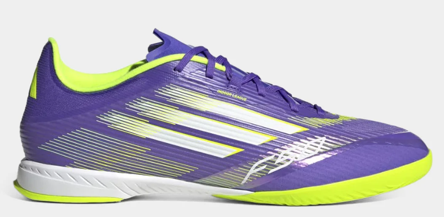

Lançamento F50 Adidas
Performance elevada com a Chuteira Futsal Adidas F50 League! Confeccionada em materiais de qualidade, esta chuteira de futsal Adidas é a escolha perfeita para quem busca agilidade nas quadras. Seu cabedal conta com tecnologia Fiberskin, que se adapta ao formato do pé, oferecendo o bem-estar que você precisa nas partidas, enquanto o solado antiderrapante oferece estabilidade para dribles rápidos. Por fim, o design dessa chuteira da Adidas combina classe e modernidade, elevando seu estilo nas partidas. Deixe o marcador falando sozinho e compre já sua chuteira Adidas F50!
